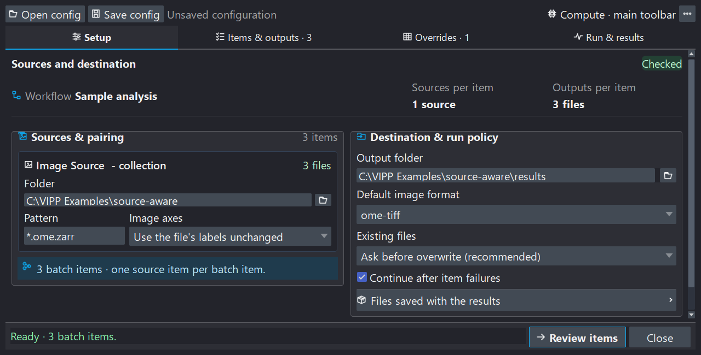
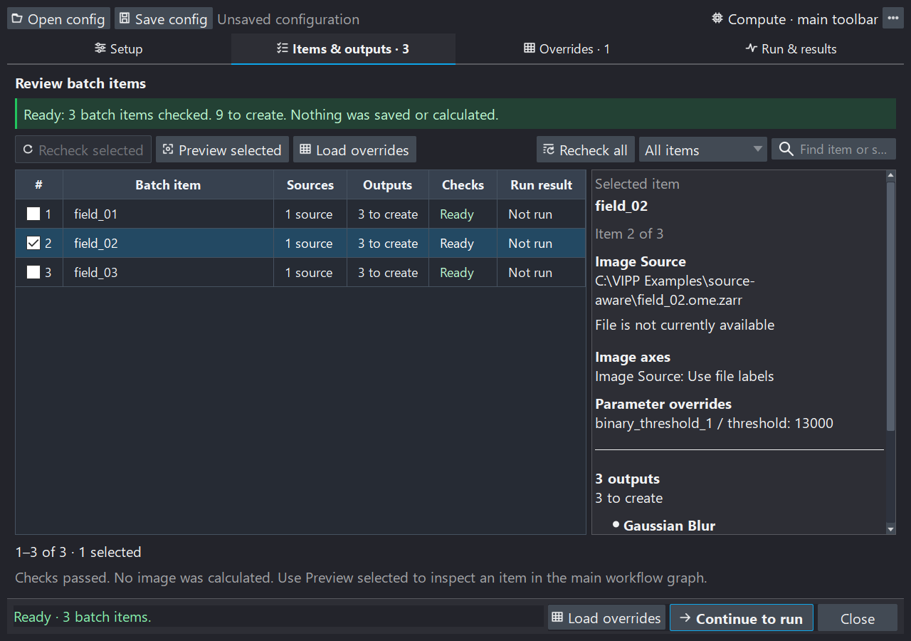
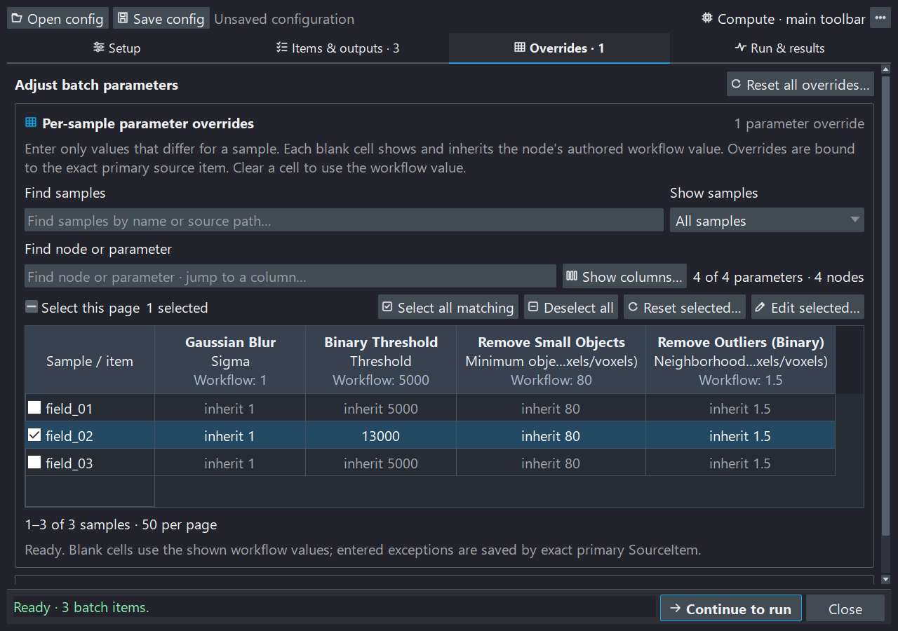
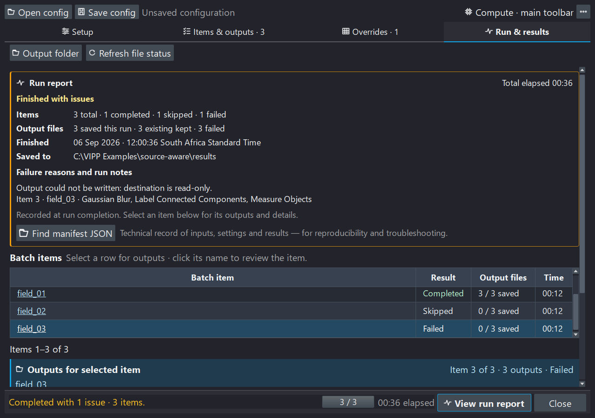

Process a folder¶
Use Batch in the main workflow toolbar to apply one reviewed workflow to collections of local images. The Batch workflow window separates preparation from processing: checking files does not calculate images, and previewing one sample does not run the collection.
| Tab | What to do here |
|---|---|
| Setup | Choose source folders, pairing, destination, image format, and run policy. |
| Items & outputs | Review the exact samples and outputs, inspect a representative, and decide what to do with existing files. |
| Overrides | Change supported numeric values for particular samples, or Run/Bypass behavior for every sample. |
| Run & results | Review the final plan, run it, and read the results and failure explanations. |
The footer keeps the current activity and next action visible. You can return to an earlier tab without starting a check or a run merely by opening that tab.
1. Set up sources and destination¶
Start with a workflow that you have already validated on representative data.
Add an explicit Batch Output node for each image, mask, label image, RGB image,
or table you want to save. Open Batch, then in Setup:
- Bind each varying
Image Sourceto a folder and filename pattern. - Review the Image axes choice. Use file labels unless the acquisition requires a deliberate interpretation; see TIFF pages and axes.
- Choose the output folder and default image format.
- Choose the existing-file policy and whether to continue after an item fails.
- Review the compute request. It describes the requested policy, not proof that a GPU will be used; actual implementations are recorded with the run.
- Select Check batch.

Setup makes source bindings and output policy visible before processing. These interface examples use three synthetic fields and image/table outputs, not research data. The paired Red/Green walkthrough below is a separate bundled demo.
The suggested output subfolder of the primary source is only a suggestion.
Review and confirm it. With recursive input patterns such as **/*.tif, choose
a destination outside the input tree so a future search cannot include results
from an earlier run.
Why checking can take time¶
The first stage lists filenames and opens Items & outputs quickly. VIPP then reads image metadata and verifies exact source content in the background. Follow the active-file indicator and checked-file count. Content fingerprints read the source bytes, so a large CZI or TIFF can take substantially longer than listing its name.
One file may contain several image series. The initial file inventory is not yet the final sample list; wait for checking to finish before previewing, editing sample overrides, or running. Check does not calculate workflow images or save processing outputs.
Deterministic pairing¶
VIPP sorts matched paths independently for every bound source, expands inspectable containers into source items, and pairs those items by position. Every bound source must produce the same number of items.
Red source: field_01.npy field_02.npy field_03.npy
Green source: field_01.npy field_02.npy field_03.npy
Batch items: (Red 01, Green 01), (Red 02, Green 02), (Red 03, Green 03)
Filename similarity does not establish biological pairing. Compare the list with an independent sample map. Time, channel, and Z remain axes inside an item; VIPP does not automatically iterate axis combinations or discover HCS plate/well/field structure.
Each resolved SourceItem includes a stable selector, the observed container
revision, and reader evidence. Changed sources, missing companions, or changed
series topology require review instead of silently reassigning an old override
to a different sample. Fixed file-backed sources can remain unbound; live napari
layers and bundled sample sources need file collection bindings for headless
batch execution.
Tell VIPP what TIFF pages mean¶
For a new source, Automatic (recommended) can suggest a Z stack in one
narrow case: an ordinary TIFF reports exactly QYX, and the workflow proves
that it needs ZYX. VIPP visibly selects Stack planes are depth slices
(Z stack) and retries the check once. Confirm that those pages genuinely are
depth slices. Choose Use the file's labels unchanged to opt out.
The accepted decision is saved as QYX -> ZYX. Every item must match the
declared original axes and rank. This renames axes without moving pixels;
Reorder Axes instead transposes data and metadata. Neither action discovers
the physical slice spacing. Review scale and units separately.
Automatic is a conservative GUI convenience, not a headless guess. Saving without a needed suggestion records no declaration. Something else (advanced)… exposes less common explicit interpretations.
2. Review items and outputs¶
Click a row to read its sources, image axes, parameter exceptions, and outputs. The output list emphasizes what will be saved—the producing node, data kind, and format. Use Show file paths when exact filenames matter. Find in File Explorer or Find in Finder reveals an existing file; Linux opens its containing folder.

The highlighted row controls the details panel. Checkboxes independently select samples for actions, so selecting a row need not navigate away from the list.
Search and filter the list before selecting samples. Checkboxes choose samples for multi-item actions; the highlighted row determines the details being shown. The list uses 50-row pages, and selections can include samples on another page.
Recheck selected verifies the chosen source revisions and output presence; it does not replace full scientific preflight for the whole collection. Use Recheck all after a scientific setting or source-definition change. Load overrides opens the selected samples in the override editor—it is not an import-file action.
Preview one sample¶
Preview selected calculates the chosen item through the live graph, including its effective parameter and node overrides. It does not write batch outputs. The Batch representative strip above the graph lets you move between samples and return to the current item in the Batch workflow window to inspect its details or load its overrides.
Representative selection replaces all collection-bound sources together; fixed sources remain fixed. The authored workflow defaults do not change. A requested representative becomes the displayed item only after its source loading and calculation succeed. Leave batch returns to ordinary single-image work without deleting files or saved configurations.
Keep some existing files and overwrite others¶
The Existing files · batch default control is available in both Items & outputs and Run & results. You do not need to return to Setup or repeat the full source check just to change this policy.
| Choice | Meaning |
|---|---|
| Ask before overwrite | Existing destinations need a decision. Pressing Run presents the overwrite review; no replacement occurs before explicit consent. Headless execution cannot ask and fails closed. |
| Skip existing | Keep each existing output unchanged; create missing outputs. |
| Overwrite without asking | Permit replacement when the batch is explicitly run. |
For an individual exception, right-click that item's row and choose:
- Keep existing outputs;
- Rerun and overwrite outputs; or
- Use batch default to remove its exception.
These actions affect the clicked item, not every checked row. Reset item choices removes all individual file-policy exceptions; it does not reset scientific parameter or node overrides. Choices survive save/load and changes to the default, and are bound to exact source identities and destination paths.
An item whose outputs will all be kept needs no source-pixel calculation. If only some outputs exist, it can still calculate once to create the missing ones. The run count excludes fully kept items; existing files are not relabelled as newly saved results. Keeping files does not prove that an earlier analysis finished successfully or used the current workflow.
Duplicate output destinations, outputs overlapping inputs, and explicitly protected outputs remain errors. An item-level overwrite choice cannot bypass those protections. Final Run validation still checks current disk state.
3. Review overrides¶
Per-sample parameter overrides¶
Rows are samples and columns are eligible numeric scientific parameters. The node name identifies the column; the displayed workflow value is its inherited default. Leave a cell blank to inherit that value, or enter an exception.

Parameter exceptions belong to individual samples. Run/Bypass choices below apply to the entire batch; neither edits the authored workflow defaults.
Use Find samples, Show samples, and Find node or parameter to narrow the view. Show columns… controls which parameters are visible; hiding a column does not delete its values.
For several samples, check their rows and choose Edit selected…. First choose the parameters to change, then choose Set value or Use workflow value for each. Apply to selected samples commits the validated draft. Discard edits changes nothing. Unchosen parameters retain their existing overrides.
The selection and reset controls have different jobs:
- Select this page changes checkboxes on the visible page.
- Select all matching selects every sample matching the filters, including other pages. Check the selected count before applying an edit.
- Deselect all only removes selection; no parameter values change.
- Reset selected… restores all parameter defaults for checked samples, including hidden columns and selected samples on other pages.
- Reset all overrides… restores all sample parameters and all batch Run/Bypass choices. It does not change the original workflow.
Resets ask for confirmation. Numeric overrides use the normal parameter bounds and types. Choice settings, source selectors, destinations, compute controls, expressions, and graph topology are not per-sample parameters.
Run or bypass nodes¶
Expand Run or bypass nodes, the second section of Overrides. Its choices apply to every sample: inherit the workflow, force Run, or force Bypass. Explicit Run and Bypass choices use distinct highlighting so exceptions are easy to find. Bypass forwards a compatible primary input without applying the operation; unsafe splices are rejected. The authored graph stays unchanged.
Parameter or node changes make the scientific plan stale. Use the warning's Check batch action, or Recheck all, before running. A representative preview is useful for visual review but is not required to run a checked batch.
4. Run and read the report¶
Review the destination, sample and output counts, effective existing-file policy, and overrides in Run & results, then press the Run button. VIPP performs one final collection validation to detect disk changes since Check. Its worker reuses that fresh plan; it does not repeat the same collection discovery as a second preparation phase. Full-content fingerprints and large containers can still make this preparation take time.
If sources or the reviewed plan changed unexpectedly, VIPP stops for review. Per-item source verification and guarded publication remain active during processing. A checked plan is not permission to use subsequently changed files.
The upper progress bar reports the sample, status, and current node number, for example Running (node 12/32). The lower bar reports the friendly node name and operation checkpoint. Elapsed time is shown separately. A long atomic library or file-writer call may not report intermediate percentages; VIPP does not invent progress inside that call.
Stop safely¶
Stop safely requests cooperative cancellation. The current library call may finish before cancellation is observed. Wait for finalization and cleanup; Hide window does not cancel a run. Completed earlier outputs remain saved. An item interrupted before publication is distinguished from an item that failed; later unstarted items are recorded separately as skipped.
There is no automatic resume button. To continue deliberately, return to Setup, review settings, check again, and choose which existing outputs to keep or overwrite. “Skip existing” preserves files; it is not a guarantee that unfinished work from an earlier item resumes exactly where it stopped.
The readable run report¶
The report appears inside Run & results after completion or cancellation. It summarizes items, elapsed time, saved and kept outputs, failed/cancelled outputs, and the destination. Failure details identify affected items and outputs and explain recorded causes. Expand Show all details for longer messages. An absent recorded reason is reported as such, not guessed.

Illustrative synthetic outcomes show how saved, kept, and failed outputs differ; the read-only destination error is included to demonstrate failure reporting. This is an interface example, not a recorded performance benchmark. Read the summary first, then select an item for its individual output records.
Below it, select a batch row to see that item's outputs. Clicking the underlined item name navigates to Items & outputs; clicking the blank part of the row only changes the selected output list. View run report in the footer returns to the report after browsing and never starts another run or check.
Output folder opens the destination. Refresh file status checks whether files still exist on disk; it neither recalculates images nor validates a new scientific run plan. Presence is also refreshed automatically where file notifications are available; the manual action is useful for external or network-drive changes. An existing file is not proof of scientific success.
Find manifest JSON locates the machine-readable technical record for audit and automation. It is secondary to the readable summary, not another report window. Keep the archived manifest: a successful new Check replaces the previous run view in this workspace.
Save and replay¶
Use Save config for a standalone batch configuration and Open config to reload it against the current workflow. Saving the main workflow also offers to attach the batch configuration. Attachments contain settings and local paths, not source pixels or calculated results. A valid attachment reopens the Batch workflow window and checks sources in the background; it does not automatically calculate a representative or start processing.
Batch configuration schema 6 adds exact-item file-policy choices to the existing source selectors, axis declarations, numeric overrides, whole-batch node profiles, and compute request. Supported earlier configurations load without inventing these choices. Changed source identities or destinations cannot silently receive old exceptions. Review paths after moving a configuration to another computer. See versions and compatibility.
The optional vipp_batch_pipeline.py is a thin launcher for the saved config
and workflow, using the same headless batch core:
It uses the saved compute request unless explicit CLI options override it.
Exit code 0 means no recorded failures, 1 means a finalized batch contains
failures, 2 means setup/execution failed before a normal result, and 130
means cooperative cancellation. See save, share, and export
for the distinction between this runner and an exported standalone workflow.
Outputs and provenance¶
Batch Output marks the exact port to save and supports tags, subfolders,
templates, format overrides, and overwrite protections. Default naming uses
{source_stem}__{tag}. Templates can also use {batch_id}, {batch_index},
{source_name}, {primary_source_stem}, {node_id}, and {node_title}.
Use explicit markers. A warned terminal-node fallback exists for older graphs;
ambiguous multi-output terminals and side-effecting Save Image nodes are not
accepted as a reproducible batch definition.
For each item, VIPP verifies the sources, calculates the required graph, stages outputs privately, reverifies source identities and device cleanup, and then promotes the outputs to final paths. A source-change failure before publication does not publish that item's staged files. Promotion is not a multi-file transaction: a later write failure can leave a partial item with some successfully saved outputs, which the report and manifest retain explicitly.
Every run retains a latest vipp_batch_manifest.json, a run-id archive, and
per-item/output sidecars. These record source revisions, workflow/configuration
hashes, effective overrides and file policies, implementation provenance,
errors, timing, and output states. Preserve them with the results. Sidecars are
a recovery trail, not a promise of crash-proof multi-file atomicity.
If actual CPU/GPU cleanup cannot be verified, VIPP blocks further compute in that process and requests restart. Already published outputs remain recorded; unpublished private outputs are not represented as successful writes.
Try the synthetic walkthrough¶
From the Batch window's overflow menu, choose Load demo configuration…, or open Deterministic Batch & Provenance from the example browser. Select a writable location to create a unique working copy; the demo never overwrites a previous copy.
- In Setup, inspect the Red and Green source bindings and destination.
- Check the batch: three paired fields should appear.
- Select the middle field and preview it; confirm both channels change together.
- Open Overrides and inspect inherited values before trying a numeric exception. Reset your experiment and check again to return to the reference demo.
- Run the reference configuration and read the in-page report.
- Inspect the nine outputs: combined images, overlap labels, and measurement tables for three fields. Check again to explore keeping existing outputs.
The bundled ground truth supports exact array/table and provenance checks for this defined synthetic fixture. It does not validate another assay or filename pairing scheme. Before accepting your own run, confirm pairing, axes, scale, QC, intended outputs, and the reported outcomes independently.